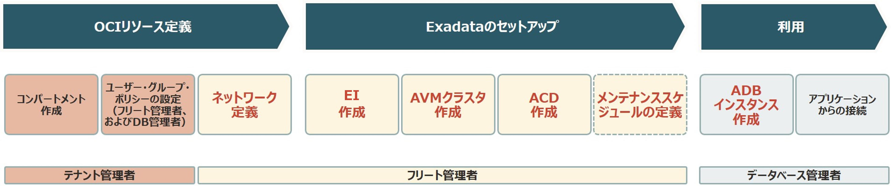
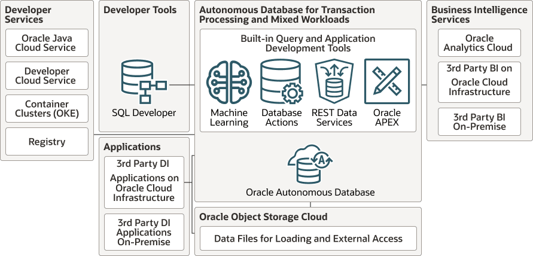
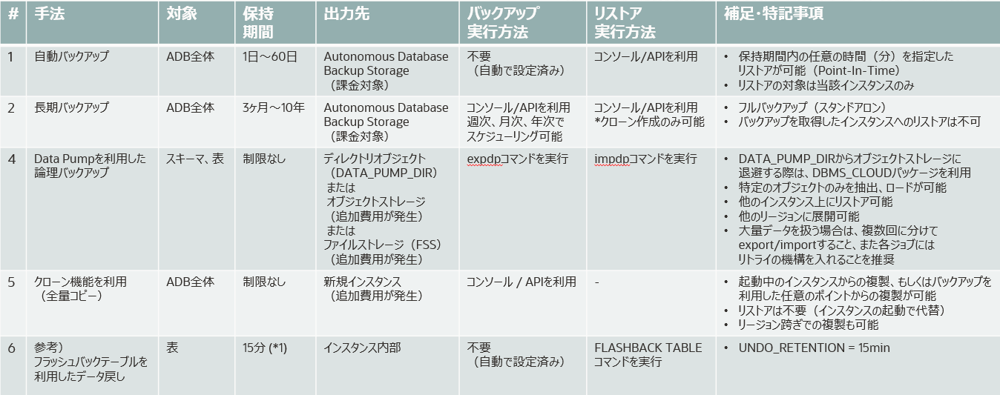
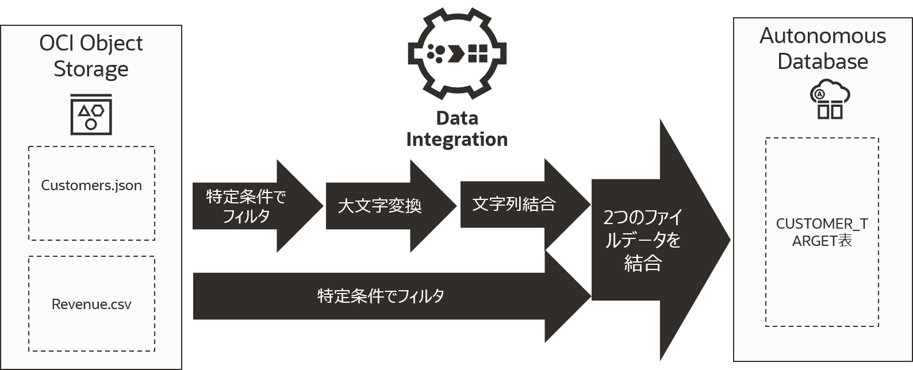

作成日：2025/12/13 10:12:20
更新日：2026/05/10 13:12:46
トップページ
OCI資格情報(OCI-ADP-2025)
分類01:OCI資格概要
資格名(2025)
- 試験番号: 1Z0-931(1Z0-931-25)
- Oracle AI Autonomous Database 2025 Professional
- 旧名：Oracle Autonomous Database Cloud 2025 Professional
Oracle社公式サイト
試験内容チェックリスト
- Autonomous Database の概要
- Autonomous Database のアーキテクチャと統合
- Autonomous Database
のアーキテクチャ・コンポーネントと主な機能の説明
- Oracle Cloud Infrastructure の理解
- 様々な Autonomous Database 製品およびライセンス・タイプの説明
- Autonomous Database (ADB) 共有
- Autonomous Database (ADB) 共有インスタンスの作成 -
プロビジョニング、OCPU やストレージのスケーリング、起動、停止
- エラスティック・リソース・プールを使用したデータベースの統合
- ユーザーの管理
- クローニング
- Autonomous Database の移動
- Autonomous Database インスタンスの監視 - イベントおよびアラーム
- Autonomous Database のバックアップとリストアの管理
- Data Guard の説明
- Autonomous Database Dedicated
- ADB Dedicated and ADB Cloud@Customerのワークフローと機能の説明
- 専用リソースのプロビジョニング
- Autonomous Dedicated の OCI ポリシーの作成
- 専用インフラストラクチャの監視
- メンテナンス・スケジュール(パッチ)の管理
- 暗号化キーの管理
- 試験内容チェックリスト
試験コース
- 試験コース
- 分類01:OCI資格概要
- 分類02:Oracle Autonomous AI Database/概要
- 分類03:Oracle Autonomous AI Database/構成種別(デプロイメント)
- 01:専用(Dedicated)インフラストラクチャー(ADB-D)
- 02:Oracle Autonomous AI Database Serverless(ADB-S)
- 分類04:Oracle Autonomous AI Database/ADB機能
- 01:Oracle Autonomous AI Database
- 02:DB機能種別(ワークロード)
- 分類05:Oracle Autonomous AI Database/各機能
- 分類06:Oracle Autonomous AI Database/ツールセット
- 01:Oracle APEX
- 02:Oracle データ・ツールセット
- 03:Oracle データ・トランスフォーム
- 分類07:Oracle Autonomous AI Database/開発
- 分類08:Oracle Autonomous AI Database/移行
勉強メモ
分類01:OCI資格概要
Qiita
Oracle AI
Database/ライセンス体系
分類02:Oracle Autonomous AI Database/概要
ライセンス体系/ECPUとOCPUの違い
- OCPU (Oracle Compute Unit)
- 1OCPU は、ハイパースレッディングが有効な 1 つの物理コア
に相当します（2 vCPU 相当）
- 主に Compute インスタンス、Base Database Service
などで利用されます。
- ECPU (Elastic Compute Unit):
- Elastic CPU の略で、常時フル性能を使わず、必要時にだけ CPU
性能をバーストさせる設計となります
- 特定のデータベースサービス（Autonomous Database, MySQL HeatWave
など）向けに導入された、より柔軟で細分化された 単位です
- ECPU は「使用時間に応じた CPU 秒課金」で、OCPU
より後発の比較的新しい課金モデル
- バックグラウンドでは物理 CPU
を共有し、負荷が低いときには割り当てを抑える
- 1 ECPU は、0.25 OCPU（0.5 vCPU） に相当します。つまり、1 OCPU = 4
ECPU という換算になります。
- ECPU単位
- 【OCI】OCPUとECPUについて
- 【OCI】OCPU
と ECPU
- [Autonomous
Database] OCPUモデルからECPUモデルに変更してみる
ライセンス体系/PAYGとBYOLの違い
- PAYG（Pay-As-You-Go：従量課金）
- 使用量に応じた時間単位の支払い
- 料金体系: 使用した時間やリソース量に応じて課金。
- メリット: 初期費用が不要で、すぐにサービスを利用開始できる。
- 向いているケース: 需要が変動する環境、短期的なプロジェクト。
- BYOL（Bring Your Own License：ライセンス持ち込み）
- 既存のライセンスをクラウドに適用する形態
- 料金体系: ベンダーから事前に購入したライセンスを使用。
- メリット:
クラウドのライセンス料金が不要（または削減）になり、オンプレミスの既存資産を再利用できる。
- 向いているケース:
既存ライセンスを多く持っている企業、長期利用の固定ワークロード。
- Pay
As You Goモデルの価格表
- Oracle
Bring Your Own License（BYOL）に関するFAQ
ユニバーサル・クレジット
クラウド価格
Oracle Autonomous
AI Database/デプロイメント
分類03:Oracle Autonomous AI Database/構成種別(デプロイメント)
Oracle AI
Database構成種別(デプロイメント)
- Oracle AI Database構成種別(デプロイメント)
- Autonomous Database(ADB)
- Autonomous Database Dedicated(ADB-D/専有型)
- Autonomous Database Serverless(ADB-S/共有型)
ADB-DとADB-Sの違い
Oracle AI
Database管理範囲(共同責任モデル)
Autonomous Database
Dedicated(ADB-D/専有型)
分類03:Oracle Autonomous AI Database/構成種別(デプロイメント)
ADB-D/概要
ADB-D/構築手順
(ADB-D構築手順)

ADB-D/メトリクス
Autonomous Database
Serverless(ADB-S/共有型)
分類03:Oracle Autonomous AI Database/構成種別(デプロイメント)
Autonomous AI Database
Serverless
各機能
Oracle
Autonomous AI Database(Oracle Autonomous Database/ADB)
分類04:Oracle Autonomous AI Database/ADB機能
概要
構成・仕様
自律型データベース・クラウド/特徴
- 自律型データベースの仕組み
- 自己管理（Self-Driving）:
データベースの作成、チューニング、スケーリング（拡張）を自動で行う。負荷に応じてCPUやストレージを自動的に拡張し、稼働したまま変更可能。
- 自己保護（Self-Securing）:
セキュリティパッチの自動適用、データ暗号化、不正アクセス検知など、外部脅威と内部ミスの両方からデータを守る。
- 自己修復（Self-Repairing）:
障害発生時に自動的に復旧し、ダウンタイムを最小限に抑える。
- 特徴
- 自動プロビジョニング
- DBAを介さずにデータベース導入(DB構築)ができる機能です。
- 自動構成
- 特定のワークロードに最適化するようにデータベースを自動的に構成・チューニングする機能です。
- 自動インデックス作成
- この機能は、ワークロードを自動的にモニターし、アプリケーションに支障をきたす可能性のある欠落したインデックスを検出します。
- 自動スケーリング
- この機能は、ワークロードが必要とするコンピュート・リソースを自動的にスケールし、実際の使用量に応じた支払いを実現します。
- 自動データ保護
- 自律型データベースは、機密データや規制対象データを自動的に保護し、構成のセキュリティを評価し、異常なアクティビティをモニターできます。
- 自動化されたセキュリティ
- オペレーティング・システムへのアクセスを禁止し、管理者権限を制限することで、フィッシング攻撃の防止を支援し、クラウドへの侵入と悪意のある内部ユーザーの両方からシステムを保護します。
- 自動バックアップ
- 過去60日以内の指定した時点までのデータベースをリストアまたはリカバリすることができます。
- 自動パッチ適用
- ダウンタイムなしで自動的にパッチやアップグレードを適用できるようになります。アプリケーションの実行は継続されながら、パッチ適用はクラスタノードまたはサーバー間でラウンドロビン方式で行われます。
- 自動化された障害検出と解決
- パターン認識を使用して、長時間のタイムアウトなしにハードウェア障害を自動的に予測することができます。
- 自動フェイルオーバー
- スタンバイ・データベースへのデータ損失ゼロの自動フェイルオーバーは、プライマリ・データベース・インスタンスが利用できなくなった場合でも、アプリケーションがアクセス可能な状態を維持します。
- 自律型データベースとは
- 自律型データベースビジョン
- 自律型データベース
Oracle Autonomous Database
- 【トレンドウォッチ】情シス業務から運用が消えるのか！？自律型データベースってなに？
Oracle
Autonomous AI Database/DB機能種別(ワークロード)
分類04:Oracle Autonomous AI Database/ADB機能
DB機能種別(ワークロード)
Oracle Autonomous
Database(ATP)
Oracle Autonomous AI Transaction
Processingは、トランザクション、分析、バッチのワークロードを同時に実行するために最適化された、完全に自動化されたデータベース・サービスです。
(ATPの構成図)

Oracle Autonomous AI
Lakehouse
Autonomous
Database for analytics and data warehousing (ADW)
Autonomous JSON Database(AJD)
ADB/構築
分類05:Oracle Autonomous AI Database/各機能
ADBプロビジョニング
ADBスケーリング
データベース・リンク
ADB/データ・ロード
分類05:Oracle Autonomous AI Database/各機能
データ・ロード
DBMS_CLOUDパッケージ
DBMS_CLOUDパッケージでは、オブジェクト・ストレージのデータを操作するための包括的なサポートを提供します。
Datapump
ADB/可用性
分類05:Oracle Autonomous AI Database/各機能
ADB可用性/概要
(Autonomous AI Database バックアップ・リストア手法の一覧)

Autonomous AI
Database バックアップとリストア
Autonomous Data Guard(Data
Guard)
ADB/接続
分類05:Oracle Autonomous AI Database/各機能
事前定義済データベース・サービス名
ADB/Database Actions
分類05:Oracle Autonomous AI Database/各機能
Database Actions
- 公式資料
- チュートリアル
- speakerdeck
- Qiita
Database
Actions/データ・ロード
ADB/Data Studio
分類05:Oracle Autonomous AI Database/各機能
Autonomous AI Database
Data Studio/概要
Autonomous AI
Database Data Studio/機能一覧
Oracle Data
Transformsは、自律型AIデータベースとのデータ統合のためのグラフィカル・データ変換を設計するために使用できるグラフィカル・ユーザー・インタフェースです。
ADB/ADBイベント
分類05:Oracle Autonomous AI Database/各機能
ADBイベント/概要
ADB/アップグレード・パッチ適用
分類05:Oracle Autonomous AI Database/各機能
アップグレード概要
メンテナンスパッチ
自動ワークロードリプレイ
Oracle
データ・ツールセット(OCI-GUI)
分類06:Oracle Autonomous AI Database/ツールセット
Oracleデータ・ツールセット(OCI-GUI)/概要
Oracleのデータ・ツールセットは、データベースの管理、分析、開発を効率化する包括的な製品群です。
SQL*PlusやSQL Developer、OCI Database Toolsなどの純正ツールのほか、Toad
for Oracleのようなサードパーティ製高機能ツール、 さらにBI（Oracle
Analytics
Cloud）と連携するデータセット機能が含まれ、データ収集から可視化までを一貫してサポートします。
- 主なOracleデータツールと機能
- Database Actions
- Oracle REST Data
Servicesを使用して、OCI上サービスの開発、管理およびモニタリング機能を提供するWebベースのインタフェースです。
- データベース・パフォーマンス・ダッシュボード
- Oracle Database Tools Service
- OCI上のデータベース（Autonomous
Databaseなど）への接続・管理を行うマネージド・サービスです。
- Oracle Analytics Cloud (OAC) データセット:
- データベース、ファイル、SaaS（Salesforceなど）からデータを取得し、視覚化するためのデータ準備・モデリング・ツールです。
- 開発者ツール
- Autonomous
AI Database組み込みツールについて
- 分析
- ツール群
Graph Studio
Oracle Analytics Cloud
Oracle Database Tools Serviceは、Oracle Cloud
Infrastructure（OCI）内のマネージド・サービスであり、複数のユーザー、リソース、およびサービスで再利用できる任意のOracle
Databaseへの接続をOCIに作成できます。
接続が確立されると、WebベースのSQLワークシートを使用して、SQLに直接アクセスするか、OCIクラウド・シェルによって、SQLclセッションで接続を使用します。
Oracleデータ・ツールセット(デスクトップツール)
分類06:Oracle Autonomous AI Database/ツールセット
Oracleデータ・ツールセット(デスクトップツール)/概要
Oracleのデータ・ツールセットは、データベースの管理、分析、開発を効率化する包括的な製品群です。
SQL*PlusやSQL Developer、OCI Database Toolsなどの純正ツールのほか、Toad
for Oracleのようなサードパーティ製高機能ツール、 さらにBI（Oracle
Analytics
Cloud）と連携するデータセット機能が含まれ、データ収集から可視化までを一貫してサポートします。
- 主なOracleデータツールと機能
- SQL*Plus: データベース操作のためのコマンドライン・ツール。SET MARKUP
CSV ON機能でデータの抽出が容易
- Oracle SQL Developer:
データベース開発・管理のための無料グラフィカル・ツール。SQLの実行、DBオブジェクトの管理、移行が可能。
- Oracle Data Access Components (ODAC): .NET、COM、OLE
DB、ODBCを介してOracleデータベースにアクセスするためのクライアント・ライブラリ。
- (サードパーティ)Toad for Oracle (Quest Software):
データベースのパフォーマンス診断、SQLの最適化、自動化などを行うサードパーティ製の強力な開発・管理ツール。
Oracle SQLcl (SQL
Developerコマンドライン)
SQL Developer
データ・レイクハウス
分類07:Oracle Autonomous AI Database/開発
データ・レイクハウス概要
データ・レイクハウス特徴
データ・レイクハウス属性
レイクハウスは、分析にデータが必要になるまで、膨大な量のRAWデータをネイティブ形式で格納するように設計された一元化されたリポジトリです。
以下の属性を備えています。
- データ・レイクハウス属性
- オープン・ファイル形式および表形式
- 複数のデータ処理エンジンのサポート
- Schema-on-Read
- 非構造化データのサポート
- Lakehouseとは
OCI Data Integration
Oracle
Integrationは、AI、統合および自動化機能の包括的なポートフォリオを備えたAI自動化プラットフォームです。
これにより、アプリケーションとデータの接続、ビジネス・プロセスの自動化、AIによるイノベーションのすべてを、完全管理型の事前構成済環境で実現できます。
OCI Data
Integration/ETLサービス
OCI Data
Integrationでは、オブジェクト・ストレージ上のデータを変換し、Autonomous
Databaseにロードを実行することが可能です。 s
(OCI Data Integration ETLサービス概要)

OCI Data Catalog
OCI Data
Catalogは、データの専門家がデータを発見し、データガバナンスをサポートするのに役立つメタデータを管理するためのOCIサービスです。
OCI Data Flow
OCI Data Flow
は、大量データの並列分散処理を実現するためのフレームワークである Apache
Spark を OCI 上で提供するマネージドサービスです。
アップグレード
分類09:アップグレードと移行
OCI移行
分類09:アップグレードと移行
OCI移行概要